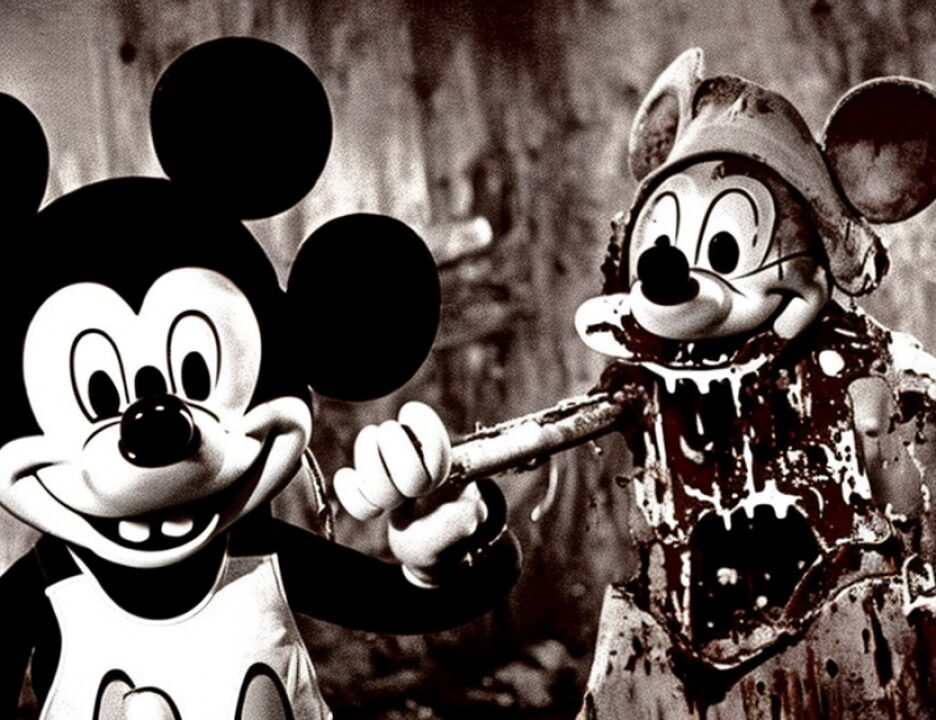

5 Q How are you presently employed?
6 A I'm a special agent with the Federal Bureau of
7 Investigation.
8 Q And how long have you been with the FBI?
9 A Approximately 23 years.
10 Q And drawing your attention to August 27th, 1998, were you
11 on duty that day?
12 A Yes, I was.
13 Q What was your assignment?
14 A I was involved in the rendition of Mohamed Odeh from
15 Nairobi, Kenya to New York.
16 Q Was it your understanding that Mr. Odeh was under arrest
17 by United States authorities when he was taken on the plane?
18 A Yes.
19 Q Was that arrest related to the charges in this case?
20 A Yes.
21 Q Where did the plane first land in the United States?
22 A Stewart Air Force Base, New York.
23 MR. BUTLER: No further questions.
24 THE COURT: Anything?
25 MR. RICCO: Yes, your Honor.
3836
1 CROSS-EXAMINATION
2 BY MR. RICCO:
3 Q Good morning, Agent Foley.
4 A Good morning.
5 Q When you look back to the day when you took Mr. Odeh into
6 custody in Kenya, when Mr. Odeh was on the airplane, he was
7 handcuffed to the chair, isn't that right?
8 A For most of the time, yes.
9 Q And at the time he was handcuffed to the chair, he was
10 dressed in a black jumpsuit; isn't that correct?
11 A Yes, I believe that is correct.
12 Q Just before he boarded the plane, the FBI removed from him
13 the clothing that he was wearing; isn't that correct?
14 A To the best of my knowledge -- I can't remember whether we
15 put the black suit over the clothes he had on or removed it.
16 Q Okay. So, therefore, you don't know whether or not the
17 clothing that he had on, the civilian clothing, was sent on to
18 a lab or not?
19 A No, I do not.
20 Q But you do have a recollection that while he was on that
21 plane he was cuffed to a chair and he had a black jumpsuit on?
22 A That's correct.
23 Q Now, the plane, before it arrived in the United States,
24 that plane landed in Cairo; isn't that correct?
25 MR. BUTLER: Objection, your Honor.
3837
1 THE COURT: Overruled.
2 You may answer.
3 A Yes.
4 Q Okay. Also, during the flight Mr. Odeh was read Miranda
5 warnings and may have been asked one or two questions; isn't
6 that correct?
7 MR. BUTLER: Objection, your Honor.
8 THE COURT: That's sustained.
9 Q Okay. There's no question in your mind that at the time
10 Mr. Odeh was placed on that plane in Kenya he was under
11 arrest, isn't that right?
12 A Under arrest in Kenya?
13 Q Yes.
14 A Yes, we handcuffed him there, so he was taken into
15 custody.
16 MR. RICCO: Thank you. I have no further questions,
17 your Honor.
18 THE COURT: Anything further of this witness?
19 Thank you, Agent. You may step down.
20 (Witness excused)
21 MR. KARAS: Your Honor, the government recalls
22 Abigail Seda.
23 ABIGAIL SEDA, recalled
24 THE COURT: Ms. Seda, the Court reminds you you are
25 still under oath.
3838
1 DIRECT EXAMINATION
2 BY MR. KARAS:
3 Q Good morning, Ms. Seda.
4 A Good morning.
5 MR. KARAS: Your Honor, may I approach the witness?
6 THE COURT: Yes.
7 Q Ms. Seda, I have placed before you what's been marked for
8 identification as Government Exhibit 660. Can you tell us
9 what that is?
10 A It's a summary chart of calls from number 2542820067 to
2